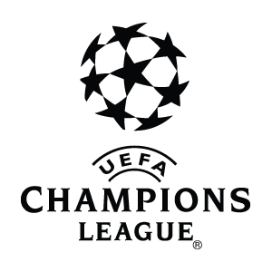

Topic Detection & Sentiment Analysis From twitter data for Champions League


Welcome to our site!!!
The 2014 UEFA Champions League Final was the final match of the 2013–14 UEFA Champions League.The match took place on Saturday, 24 May 2014, at the Estádio da Luz in Lisbon, Portugal, between Spanish sides Real Madrid and Atlético Madrid. It was the fifth tournament final to feature two teams from the same association, the second all-Spanish final and the first between teams from the same city.